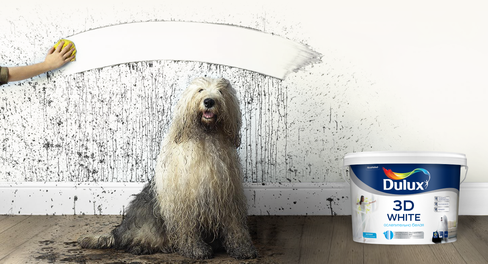
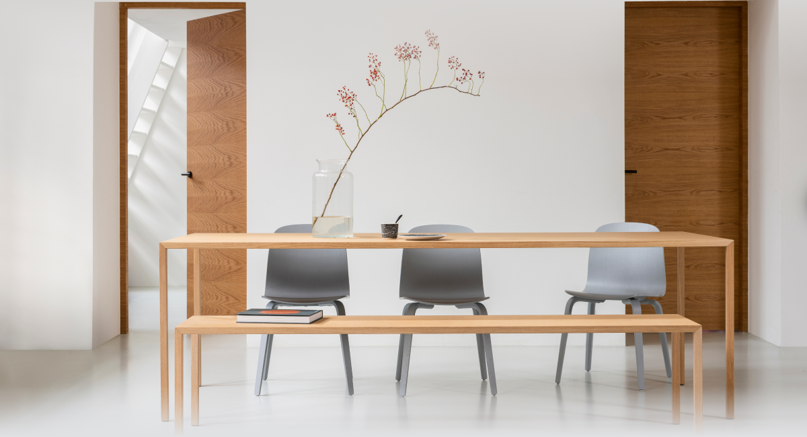
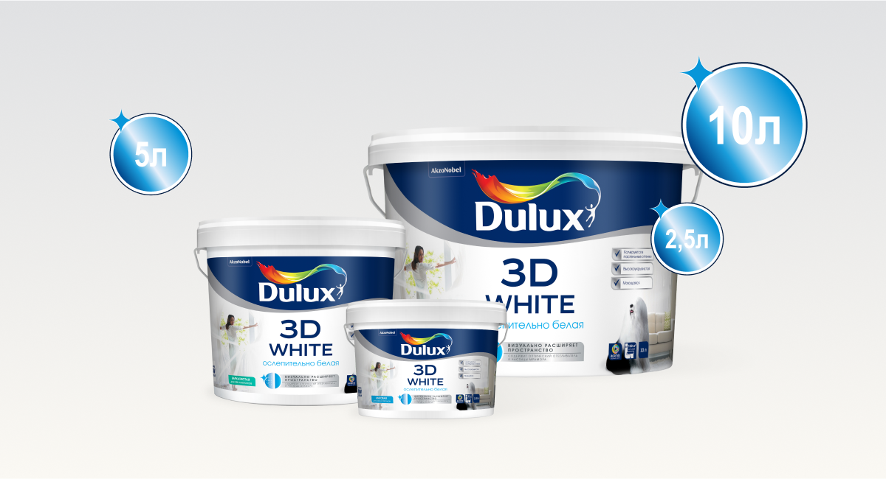
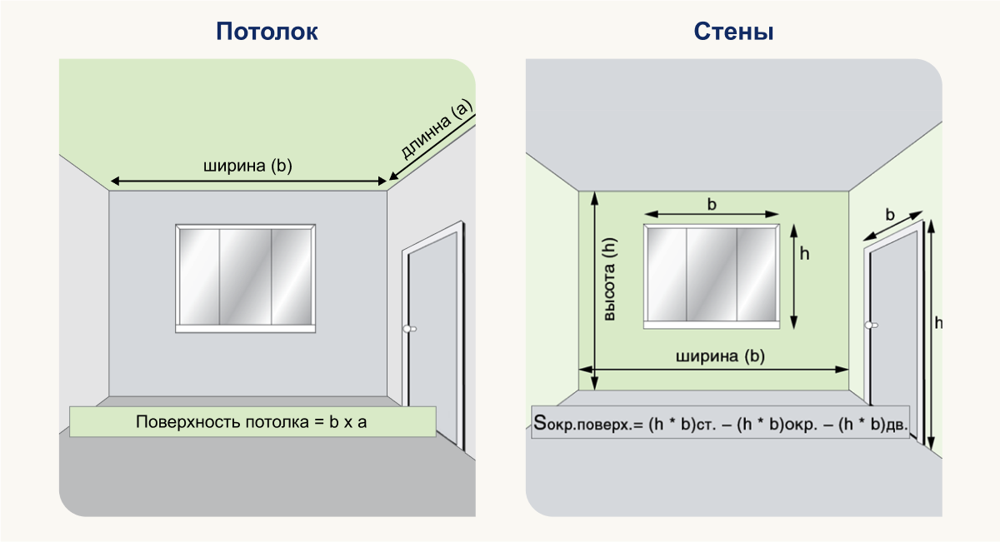
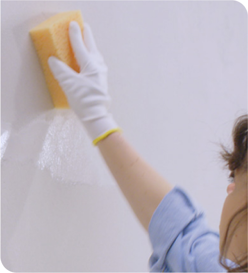
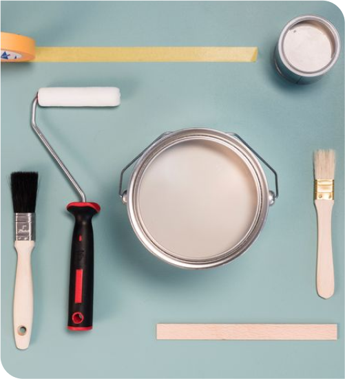

Стены готовы к сюрпризам! Краска выдерживает мытье с мылом и гелем.

Финишное покрытие
Глубокоматовое, бархатистое

Удобный литраж
Краска для стен и потолков Dulux 3D White представлена в трех фасовках: 2.5 л, 5 л и 10 л.

Площадь окрашиваемой поверхности
Потолок: площадь окрашиваемой поверхности = Ширина х Длинна.Стены: площадь окрашиваемой поверхности = (Высота х Ширину) — Окно — дверь.

Рекомендации: как покрасить самостоятельно потолок
Подготовка потолка к окрашиванию.
Прежде чем приступить к окрашиванию потолка, нужно его подготовить. Если имеются загрязнения и отслоившиеся участки старого покрытия, то поверхность надо обработать наждачной бумагой средней крупности и обязательно убрать всю пыль. Если потолок ровный, просто очистите его от пыли сухой тряпкой.

Рабочие инструменты.
Для покраски вам понадобятся кисть и валик с синтетическим ворсом средней длины. Они не «линяют» и не оставляют ворсинок. Возьмите лоток с ребристой поверхностью дна: для равномерного распределения краски по валику. Валик — удобен для работы на большой площади. Кисть нужна для грунтовки стыковых швов и углов. Для окраски больших площадей рекомендую использовать краскопульт-распылитель.

Приступаем к окрашиванию.
Приступайте к окрашиванию. Первым делом краску необходимо тщательно перемешать до однородной консистенции. Нанесите первый слой краски, начиная с углов и стыков, а потом переходите на всю поверхность. Чтобы покрыть потолок ровным тоном, наносите краску лёгкими движениями в одном направлении. Старайтесь красить равномерным слоем. Главное правило – наносить его нужно от окна к дальней стене, по направлению света.В случае необходимости вы сможете мыть потолок влажной мягкой губкой с моющими средствами. Потом протрите сухой тряпкой.
Через месяц после окрашивания поверхность устойчива к мытью с применением мягких моющих средств (раствор мыла, геля для душа или мытья посуды, шампуня), возможно небольшое изменение блеска покрытия. Не оставляйте поверхность мокрой после очистки.
Срок и условия хранения
4 года при t° от +5 °С до +30 °С в невскрытой заводской упаковке